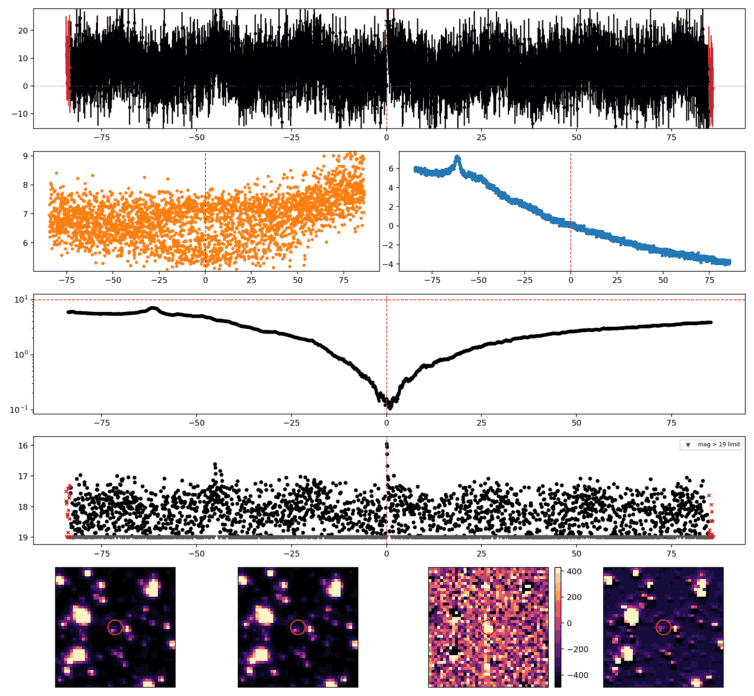
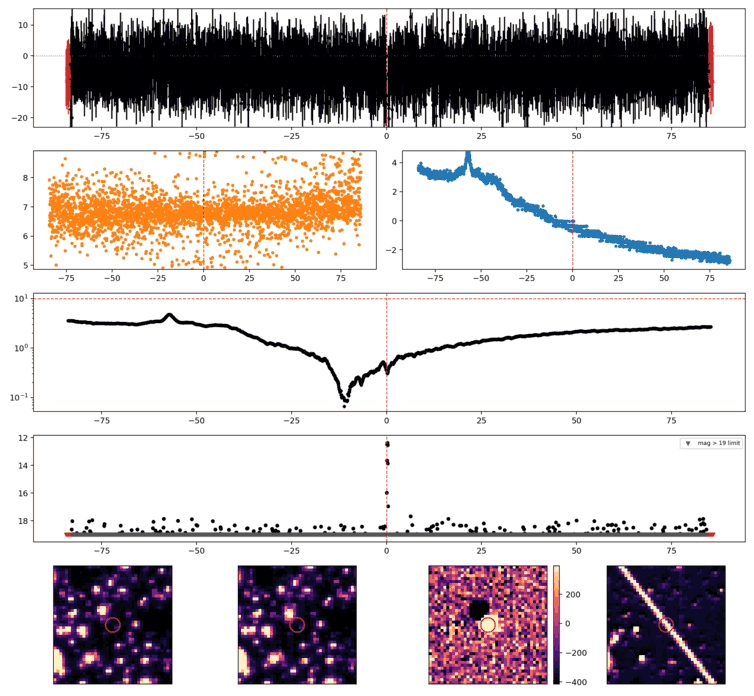
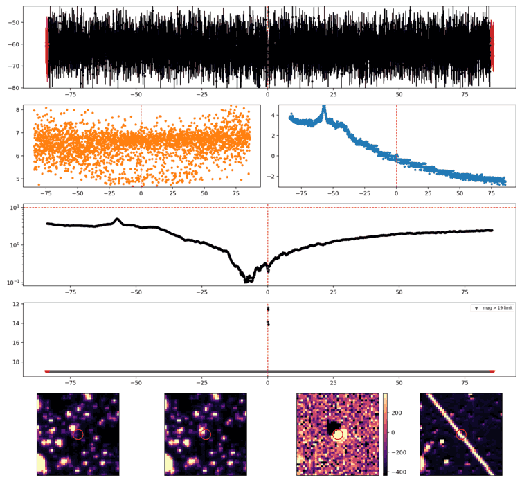
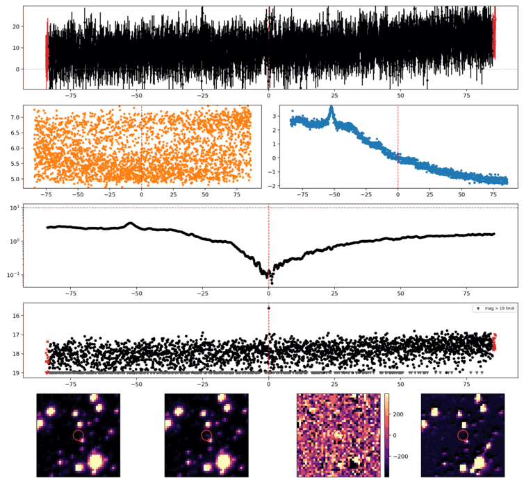
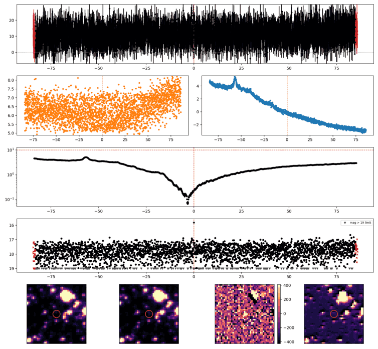
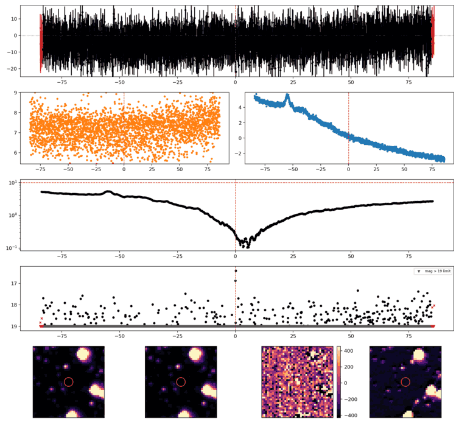
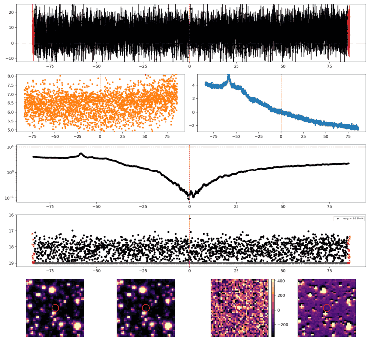
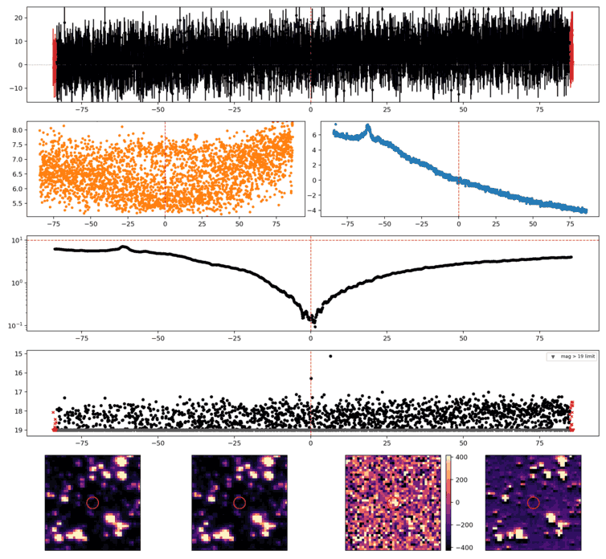

Search centered on refined position (87.6402850, -16.5789955 deg). Gaia coordinates are at J2016.0; proper motions are shown, without epoch propagation. A positional match does not change the candidate flags.
No Gaia DR3 sources found within 5 arcseconds.
Retrieved 2026-10-22T00:05:34.966379+00:00
Representative chosen by category, detection count, then Gaussian S/N. Original measurements and classifications are retained below.

Search centered on refined position (82.5005639, -21.1394890 deg). Gaia coordinates are at J2016.0; proper motions are shown, without epoch propagation. A positional match does not change the candidate flags.
No Gaia DR3 sources found within 5 arcseconds.
Retrieved 2026-10-22T00:05:35.846331+00:00

Search centered on refined position (82.5054984, -21.1322185 deg). Gaia coordinates are at J2016.0; proper motions are shown, without epoch propagation. A positional match does not change the candidate flags.
No Gaia DR3 sources found within 5 arcseconds.
Retrieved 2026-10-22T00:05:36.703133+00:00

Search centered on refined position (76.1864027, -19.5655174 deg). Gaia coordinates are at J2016.0; proper motions are shown, without epoch propagation. A positional match does not change the candidate flags.
No Gaia DR3 sources found within 5 arcseconds.
Retrieved 2026-10-22T00:05:37.528005+00:00

Search centered on refined position (81.5773802, -16.8832826 deg). Gaia coordinates are at J2016.0; proper motions are shown, without epoch propagation. A positional match does not change the candidate flags.
No Gaia DR3 sources found within 5 arcseconds.
Retrieved 2026-10-22T00:05:38.328276+00:00

Search centered on refined position (80.2397167, -14.5477008 deg). Gaia coordinates are at J2016.0; proper motions are shown, without epoch propagation. A positional match does not change the candidate flags.
No Gaia DR3 sources found within 5 arcseconds.
Retrieved 2026-10-22T00:05:39.183663+00:00

Search centered on refined position (84.0574042, -21.2385523 deg). Gaia coordinates are at J2016.0; proper motions are shown, without epoch propagation. A positional match does not change the candidate flags.
| Source ID / catalog entry | Separation (arcsec) | RA (deg) | Dec (deg) | G (mag) | BP (mag) | RP (mag) | Parallax ± error (mas) | PM RA* ± error (mas/yr) | PM Dec ± error (mas/yr) | RUWE | Variability |
|---|---|---|---|---|---|---|---|---|---|---|---|
| 2965157533242926208 | 3.143 | 84.0583346 | -21.2384502 | 19.523 | 21.069 | 18.142 | 2.202 ± 0.346 | 8.064 ± 0.198 | -14.481 ± 0.298 | 1.231 | NOT_AVAILABLE |
Retrieved 2026-10-22T00:05:40.060156+00:00

Search centered on refined position (87.1145588, -15.8802737 deg). Gaia coordinates are at J2016.0; proper motions are shown, without epoch propagation. A positional match does not change the candidate flags.
No Gaia DR3 sources found within 5 arcseconds.
Retrieved 2026-10-22T00:05:41.030501+00:00